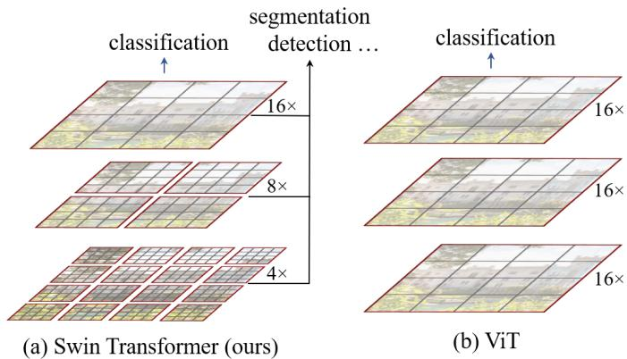
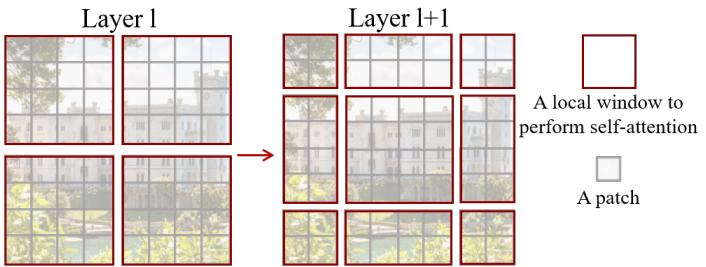
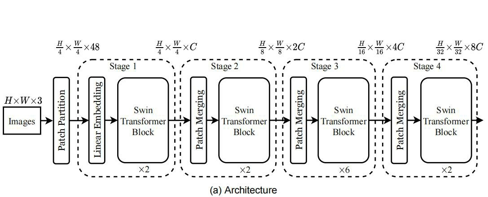
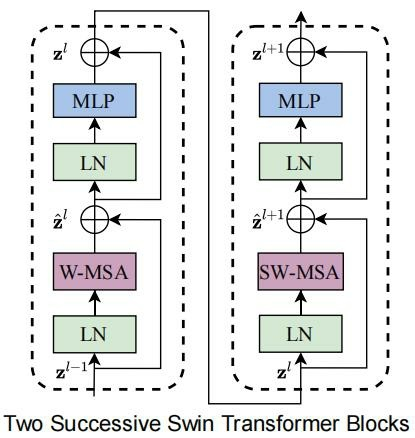
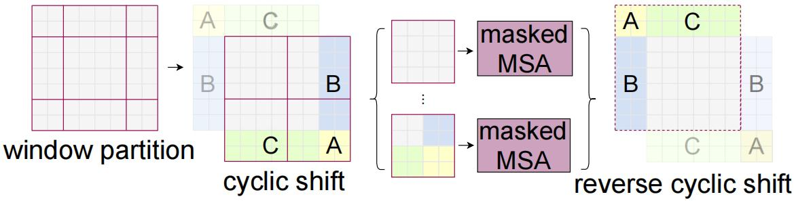
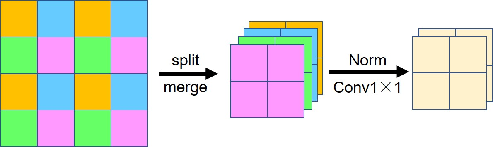

Swin Transformer¶
综述¶
会议时间：IEEE International Conference on Computer Vision, 2021 (ICCV, 2021)
介绍¶
ViT算法成功将Transformer应用到了视觉领域，但是还存在两个问题：
- 视觉中常常涉及多尺度问题，需要模型可以捕捉图像上多个尺度的信息（如目标检测中的大物体和小物体），而ViT算法尺度单一，与最初Patch的划分方法有关，因此ViT算法欠缺获取多尺度信息的能力；
- ViT算法在计算注意力时，是在全局的图像位置上计算注意力，因此计算复杂度较高，计算量随图像尺寸的增加呈平方速度增加。
对此，本文作者借鉴了卷积的思想，设计了一种层级式的特征提取网络，可以在减小计算量的同时实现提取多尺度特征数据的能力，具体如下图左侧所示：

首先，对于减小计算量，作者删去了ViT中计算全局注意力的操作，把原图划分为不同的patch窗口，在每个窗口内单独计算注意力，这样也随之引来了一个问题，在窗口内计算注意力的话，每个特征数据的关注区域就被限制在一个窗口内了，这样就失去了Transformer可以对全局实现建模的优势，对此本文作者又设计了移动窗口操作，具体如下图所示：

对于当前层，正常划分窗口，计算注意力，对于下一层（即Layer l+1），将用于计算注意力的窗口向左上角平移一段距离，实现错位，之后再计算每个窗口内的注意力。这种错位计算注意力的操作为两层之间的特征搭建了一个桥梁，可以实现窗口之间的连接、特征数据之间的通信，进一步实现全局建模的目的。
网络结构¶
网络结构如下图所示：

图像传入Swin模块之前先经过切分操作，划分成4\times4的patch，再将每个patch传入linear编码层，得到尺寸为C的特征，每个patch视为一个特征点，最后依次传入Swin Transformer模块提取特征、patch合并模块合并特征，实现下采样目的，特征数据每经过一次合并，宽高变为原来的一半，通道数变为原来的两倍。
Swin Transformer模块¶
模块结构如下图所示：

Swin Transformer模块交错组成，主要区别为多头注意力的计算方式不同，先经过正常的窗口注意力计算（W-MSA），之后再经过基于移动窗口的注意力计算（SW-MSA）。
窗口内做注意力和全局做注意力的区别，要做好区分：
-
窗口内做自注意力：序列长度是固定的，为窗口的面积M\times M，图像被分割成了不同的窗口，每个窗口依次做自注意力运算，因此窗口被归到了batch维度，窗口内每个像素点被视为序列；
-
全局做注意力（算法）：也是先划分窗口，不过这里的窗口被视为序列，序列长度与图像大小以及窗口大小有关，在计算注意力时所有的序列会同时传入一个TF模块，窗口被归到了序列维度。
时间复杂度：
基于移动窗口的注意力计算（SW-MSA）
为了让窗口之间可以产生信息传递，进一步实现特征的全局建模，作者在每次执行窗口注意力运算之后，都会向左侧和上侧偏移\lfloor \frac hM \rfloor个像素点的距离，这样有的特征就会改变自己的窗口归属，再做注意力运算时就可以和新窗口内其他的特征像素建立联系，这样经过多次交错联系之后，模型就可以对全局建模，每个像素点都可以关注全局上的信息。
简单的平移操作会带来很多问题，以上图为例，移动窗口之后，初始的四个窗口会变为九个窗口，如果直接在九个窗口上依次做注意力运算的话，计算量会很大，因此作者采用循环移动的操作，如下图所示，将移除左上角的区域转入右下角，进一步合并成四个窗口区域。

但随之又会产生一个问题，平移之后不相邻的区域会被拼接到一个窗口内部，此时在窗口内做注意力运算的话会让不相邻的区域建立不必要的联系，整个模型容易产生潜在的问题，因此作者又加了一个掩模操作，抑制不相邻区域的注意力权重。
核心思想就是找出不相邻位置所产生的注意力权重，之后在Softmax运算之前加上足够大的负数（如下图右侧所示，源码中使用-100），经过Softmax运算之后注意力权重会被近似归为0。

图片引自：https://github.com/microsoft/Swin-Transformer/issues/38
注：掩模生成策略可参考https://www.bilibili.com/video/BV13L4y1475U，42:53。
patch合并模块¶
大体流程如下图所示：

首先将特征图拆分成四组，之后沿通道方向合并，再依次经过归一化层、1\times1的卷积层做特征融合，将通道数压缩为原来的一半。
模型规格¶
- Swin-T：C=96，layer\quad numbers=\{2,2,6,2\}
- Swin-S：C=96，layer\quad numbers=\{2,2,18,2\}
- Swin-B：C=128，layer\quad numbers=\{2,2,18,2\}
- Swin-L：C=192，layer\quad numbers=\{2,2,18,2\}
其中，模型大小比例T:S:B:L=0.25:0.5:1:2，Swin-T和Swin-S的复杂度类似于ResNet50和ResNet101，窗口大小M默认为7，每个头查询向量的维度d默认为32（经过linear映射后，kqv的维数均为32），每个MLP的\alpha默认为4（特征维数m\rightarrow\alpha m\rightarrow m）。
以上仅是笔者个人见解，若有问题，欢迎指正。
代码实现¶
参考链接：
网络结构¶
class SwinTransformer(nn.Module):
r""" Swin Transformer
A PyTorch impl of : `Swin Transformer: Hierarchical Vision Transformer using Shifted Windows` -
https://arxiv.org/pdf/2103.14030
Args:
patch_size (int | tuple(int)): Patch size. Default: 4
in_chans (int): Number of input image channels. Default: 3
num_classes (int): Number of classes for classification head. Default: 1000
embed_dim (int): Patch embedding dimension. Default: 96
depths (tuple(int)): Depth of each Swin Transformer layer.
num_heads (tuple(int)): Number of attention heads in different layers.
window_size (int): Window size. Default: 7
mlp_ratio (float): Ratio of mlp hidden dim to embedding dim. Default: 4
qkv_bias (bool): If True, add a learnable bias to query, key, value. Default: True
drop_rate (float): Dropout rate. Default: 0
attn_drop_rate (float): Attention dropout rate. Default: 0
drop_path_rate (float): Stochastic depth rate. Default: 0.1
norm_layer (nn.Module): Normalization layer. Default: nn.LayerNorm.
patch_norm (bool): If True, add normalization after patch embedding. Default: True
use_checkpoint (bool): Whether to use checkpointing to save memory. Default: False
"""
def __init__(self, patch_size=4, in_chans=3, num_classes=1000,
embed_dim=96, depths=(2, 2, 6, 2), num_heads=(3, 6, 12, 24),
window_size=7, mlp_ratio=4., qkv_bias=True,
drop_rate=0., attn_drop_rate=0., drop_path_rate=0.1,
norm_layer=nn.LayerNorm, patch_norm=True,
use_checkpoint=False, **kwargs):
super().__init__()
self.num_classes = num_classes
self.num_layers = len(depths)
self.embed_dim = embed_dim
self.patch_norm = patch_norm
# stage4输出特征矩阵的channels
self.num_features = int(embed_dim * 2 ** (self.num_layers - 1))
self.mlp_ratio = mlp_ratio
# split image into non-overlapping patches
self.patch_embed = PatchEmbed(
patch_size=patch_size, in_c=in_chans, embed_dim=embed_dim,
norm_layer=norm_layer if self.patch_norm else None)
self.pos_drop = nn.Dropout(p=drop_rate)
# stochastic depth
dpr = [x.item() for x in torch.linspace(0, drop_path_rate, sum(depths))] # stochastic depth decay rule
# build layers
self.layers = nn.ModuleList()
for i_layer in range(self.num_layers):
# 注意这里构建的stage和论文图中有些差异
# 这里的stage不包含该stage的patch_merging层，包含的是下个stage的
layers = BasicLayer(dim=int(embed_dim * 2 ** i_layer),
depth=depths[i_layer],
num_heads=num_heads[i_layer],
window_size=window_size,
mlp_ratio=self.mlp_ratio,
qkv_bias=qkv_bias,
drop=drop_rate,
attn_drop=attn_drop_rate,
drop_path=dpr[sum(depths[:i_layer]):sum(depths[:i_layer + 1])],
norm_layer=norm_layer,
downsample=PatchMerging if (i_layer < self.num_layers - 1) else None,
use_checkpoint=use_checkpoint)
self.layers.append(layers)
self.norm = norm_layer(self.num_features)
self.avgpool = nn.AdaptiveAvgPool1d(1)
self.head = nn.Linear(self.num_features, num_classes) if num_classes > 0 else nn.Identity()
self.apply(self._init_weights)
def _init_weights(self, m):
if isinstance(m, nn.Linear):
nn.init.trunc_normal_(m.weight, std=.02)
if isinstance(m, nn.Linear) and m.bias is not None:
nn.init.constant_(m.bias, 0)
elif isinstance(m, nn.LayerNorm):
nn.init.constant_(m.bias, 0)
nn.init.constant_(m.weight, 1.0)
def forward(self, x):
# x: [B, L, C]
# patch_embed同时包含了切片和线性回归操作
x, H, W = self.patch_embed(x)
x = self.pos_drop(x)
# 逐次经过四个阶段，对应论文中的stage1-4，每经过一个阶段特征尺寸减半，通道变为两倍
for layer in self.layers:
# 输出的x即为提取的特征
x, H, W = layer(x, H, W)
# 下面再做池化、linear线性回归，得到类别分数
x = self.norm(x) # [B, L, C]
x = self.avgpool(x.transpose(1, 2)) # [B, C, 1]
x = torch.flatten(x, 1)
x = self.head(x)
return x
输入层¶
先切片，再传入线性回归，可由一层卷积完成
class PatchEmbed(nn.Module):
"""
2D Image to Patch Embedding
定义网络初始的patch partition，用于下采样
"""
def __init__(self, patch_size=4, in_c=3, embed_dim=96, norm_layer=None):
super().__init__()
patch_size = (patch_size, patch_size)
self.patch_size = patch_size
self.in_chans = in_c
self.embed_dim = embed_dim
# 默认下采样4倍，即patch_size默认4
self.proj = nn.Conv2d(in_c, embed_dim, kernel_size=patch_size, stride=patch_size)
self.norm = norm_layer(embed_dim) if norm_layer else nn.Identity()
def forward(self, x):
_, _, H, W = x.shape
# padding
# 如果输入图片的H，W不是patch_size的整数倍，需要进行padding
pad_input = (H % self.patch_size[0] != 0) or (W % self.patch_size[1] != 0)
if pad_input:
# to pad the last 3 dimensions,
# (W_left, W_right, H_top,H_bottom, C_front, C_back)
x = F.pad(x, (0, self.patch_size[1] - W % self.patch_size[1],
0, self.patch_size[0] - H % self.patch_size[0],
0, 0))
# 下采样patch_size倍
x = self.proj(x)
_, _, H, W = x.shape
# flatten: [B, C, H, W] -> [B, C, HW]
# transpose: [B, C, HW] -> [B, HW, C]
x = x.flatten(2).transpose(1, 2)
x = self.norm(x)
return x, H, W
Swin模块¶
class SwinTransformerBlock(nn.Module):
r""" Swin Transformer Block.
Args:
dim (int): Number of input channels.
num_heads (int): Number of attention heads.
window_size (int): Window size.
shift_size (int): Shift size for SW-MSA.
mlp_ratio (float): Ratio of mlp hidden dim to embedding dim.
qkv_bias (bool, optional): If True, add a learnable bias to query, key, value. Default: True
drop (float, optional): Dropout rate. Default: 0.0
attn_drop (float, optional): Attention dropout rate. Default: 0.0
drop_path (float, optional): Stochastic depth rate. Default: 0.0
act_layer (nn.Module, optional): Activation layer. Default: nn.GELU
norm_layer (nn.Module, optional): Normalization layer. Default: nn.LayerNorm
"""
def __init__(self, dim, num_heads, window_size=7, shift_size=0,
mlp_ratio=4., qkv_bias=True, drop=0., attn_drop=0., drop_path=0.,
act_layer=nn.GELU, norm_layer=nn.LayerNorm):
super().__init__()
self.dim = dim
self.num_heads = num_heads
self.window_size = window_size
self.shift_size = shift_size
self.mlp_ratio = mlp_ratio
assert 0 <= self.shift_size < self.window_size, "shift_size must in 0-window_size"
self.norm1 = norm_layer(dim)
self.attn = WindowAttention(
dim, window_size=(self.window_size, self.window_size), num_heads=num_heads, qkv_bias=qkv_bias,
attn_drop=attn_drop, proj_drop=drop)
self.drop_path = DropPath(drop_path) if drop_path > 0. else nn.Identity()
self.norm2 = norm_layer(dim)
mlp_hidden_dim = int(dim * mlp_ratio)
self.mlp = Mlp(in_features=dim, hidden_features=mlp_hidden_dim, act_layer=act_layer, drop=drop)
def forward(self, x, attn_mask):
H, W = self.H, self.W
B, L, C = x.shape
assert L == H * W, "input feature has wrong size"
shortcut = x
x = self.norm1(x)
x = x.view(B, H, W, C)
# pad feature maps to multiples of window size
# 把feature map给pad到window size的整数倍
pad_l = pad_t = 0
pad_r = (self.window_size - W % self.window_size) % self.window_size
pad_b = (self.window_size - H % self.window_size) % self.window_size
x = F.pad(x, (0, 0, pad_l, pad_r, pad_t, pad_b))
_, Hp, Wp, _ = x.shape
# cyclic shift
# self.shift_size表示需要平移多少，奇数的block需要平移
if self.shift_size > 0:
shifted_x = torch.roll(x, shifts=(-self.shift_size, -self.shift_size), dims=(1, 2))
else:
# 如果不需要平移，则计算注意力时也就不需要掩模操作了
shifted_x = x
attn_mask = None
# partition windows，把特征图切分成片，尺寸变为[nW*B, Mh, Mw, C]
x_windows = window_partition(shifted_x, self.window_size)
# x_windows尺寸为[nW*B, Mh*Mw, C]
x_windows = x_windows.view(-1, self.window_size * self.window_size, C)
# W-MSA/SW-MSA
# attn_windows尺寸为[nW*B, Mh*Mw, C]
attn_windows = self.attn(x_windows, mask=attn_mask)
# 将切分的片再合并，先将拉直的特征变为patch的形式，尺寸变为 [nW*B, Mh, Mw, C]
attn_windows = attn_windows.view(-1, self.window_size, self.window_size, C)
# 之后再将patch合并，变为特征图，尺寸变为[B, H', W', C]
shifted_x = window_reverse(attn_windows, self.window_size, Hp, Wp)
# reverse cyclic shift
# 如果前面平移了，这里需要再移回来
if self.shift_size > 0:
x = torch.roll(shifted_x, shifts=(self.shift_size, self.shift_size), dims=(1, 2))
else:
x = shifted_x
if pad_r > 0 or pad_b > 0:
# 把前面pad的数据移除掉
x = x[:, :H, :W, :].contiguous()
x = x.view(B, H * W, C)
# FFN
x = shortcut + self.drop_path(x)
x = x + self.drop_path(self.mlp(self.norm2(x)))
return x
基础模块¶
class BasicLayer(nn.Module):
"""
A basic Swin Transformer layer for one stage.
Args:
dim (int): Number of input channels.
depth (int): Number of blocks.
num_heads (int): Number of attention heads.
window_size (int): Local window size.
mlp_ratio (float): Ratio of mlp hidden dim to embedding dim.
qkv_bias (bool, optional): If True, add a learnable bias to query, key, value. Default: True
drop (float, optional): Dropout rate. Default: 0.0
attn_drop (float, optional): Attention dropout rate. Default: 0.0
drop_path (float | tuple[float], optional): Stochastic depth rate. Default: 0.0
norm_layer (nn.Module, optional): Normalization layer. Default: nn.LayerNorm
downsample (nn.Module | None, optional): Downsample layer at the end of the layer. Default: None
use_checkpoint (bool): Whether to use checkpointing to save memory. Default: False.
"""
def __init__(self, dim, depth, num_heads, window_size,
mlp_ratio=4., qkv_bias=True, drop=0., attn_drop=0.,
drop_path=0., norm_layer=nn.LayerNorm, downsample=None, use_checkpoint=False):
super().__init__()
self.dim = dim
self.depth = depth
self.window_size = window_size
self.use_checkpoint = use_checkpoint
self.shift_size = window_size // 2
# build blocks
self.blocks = nn.ModuleList([
SwinTransformerBlock(
dim=dim,
num_heads=num_heads,
window_size=window_size,
shift_size=0 if (i % 2 == 0) else self.shift_size,
mlp_ratio=mlp_ratio,
qkv_bias=qkv_bias,
drop=drop,
attn_drop=attn_drop,
drop_path=drop_path[i] if isinstance(drop_path, list) else drop_path,
norm_layer=norm_layer)
for i in range(depth)])
# patch merging layer
if downsample is not None:
self.downsample = downsample(dim=dim, norm_layer=norm_layer)
else:
self.downsample = None
def forward(self, x, H, W):
# 创造循环移位所需要的掩码
attn_mask = self.create_mask(x, H, W) # [nW, Mh*Mw, Mh*Mw]
for blk in self.blocks:
blk.H, blk.W = H, W
if not torch.jit.is_scripting() and self.use_checkpoint:
x = checkpoint.checkpoint(blk, x, attn_mask)
else:
x = blk(x, attn_mask)
if self.downsample is not None:
# 执行下采样操作，特征图尺寸减半，通道数变为原来两倍
x = self.downsample(x, H, W)
H, W = (H + 1) // 2, (W + 1) // 2
return x, H, W
创建MSA掩码¶
参考：https://www.bilibili.com/video/BV1yg411K7Yc
def create_mask(self, x, H, W):
# calculate attention mask for SW-MSA
# 保证Hp和Wp是window_size的整数倍，window_size为每个小窗口的大小，在小窗口内做注意力
Hp = int(np.ceil(H / self.window_size)) * self.window_size
Wp = int(np.ceil(W / self.window_size)) * self.window_size
# 拥有和feature map一样的通道排列顺序，方便后续window_partition
img_mask = torch.zeros((1, Hp, Wp, 1), device=x.device) # [1, Hp, Wp, 1]
h_slices = (slice(0, -self.window_size),
slice(-self.window_size, -self.shift_size),
slice(-self.shift_size, None))
w_slices = (slice(0, -self.window_size),
slice(-self.window_size, -self.shift_size),
slice(-self.shift_size, None))
cnt = 0
for h in h_slices:
for w in w_slices:
# img_mask用于为每个位置打上区域标签，序号为0-8
img_mask[:, h, w, :] = cnt
cnt += 1
# img_mask尺寸为[56,56,1]
# mask_windows尺寸为[64, 7, 7, 1]
mask_windows = window_partition(img_mask, self.window_size) # [nW, Mh, Mw, 1]
# 之后再拉直窗口，变为[64,49]
mask_windows = mask_windows.view(-1, self.window_size * self.window_size) # [nW, Mh*Mw]
# 逐位做差，结果为0的位置为相邻位置，需要计算注意力，对应的掩模数据应为0
# 可参考:https://www.bilibili.com/video/BV1yg411K7Yc
attn_mask = mask_windows.unsqueeze(1) - mask_windows.unsqueeze(2) # [nW, 1, Mh*Mw] - [nW, Mh*Mw, 1]
# [nW, Mh*Mw, Mh*Mw]
# 制作掩模，需要计算注意力的位置，对应数据为0，不需要计算注意力的位置，对应数据为-100（经过softmax之后，注意力权重约等于0）
attn_mask = attn_mask.masked_fill(attn_mask != 0, float(-100.0)).masked_fill(attn_mask == 0, float(0.0))
return attn_mask
窗口注意力模块¶
class WindowAttention(nn.Module):
r""" Window based multi-head self attention (W-MSA) module with relative position bias.
It supports both of shifted and non-shifted window.
Args:
dim (int): Number of input channels.
window_size (tuple[int]): The height and width of the window.
num_heads (int): Number of attention heads.
qkv_bias (bool, optional): If True, add a learnable bias to query, key, value. Default: True
attn_drop (float, optional): Dropout ratio of attention weight. Default: 0.0
proj_drop (float, optional): Dropout ratio of output. Default: 0.0
"""
def __init__(self, dim, window_size, num_heads, qkv_bias=True, attn_drop=0., proj_drop=0.):
super().__init__()
self.dim = dim
self.window_size = window_size # [Mh, Mw]
self.num_heads = num_heads
head_dim = dim // num_heads
self.scale = head_dim ** -0.5
# define a parameter table of relative position bias
# 创建相对位置编码
self.relative_position_bias_table = nn.Parameter(
torch.zeros((2 * window_size[0] - 1) * (2 * window_size[1] - 1), num_heads)) # [2*Mh-1 * 2*Mw-1, nH]
# get pair-wise relative position index for each token inside the window
coords_h = torch.arange(self.window_size[0])
coords_w = torch.arange(self.window_size[1])
coords = torch.stack(torch.meshgrid([coords_h, coords_w], indexing="ij")) # [2, Mh, Mw]
coords_flatten = torch.flatten(coords, 1) # [2, Mh*Mw]
# [2, Mh*Mw, 1] - [2, 1, Mh*Mw]
relative_coords = coords_flatten[:, :, None] - coords_flatten[:, None, :] # [2, Mh*Mw, Mh*Mw]
relative_coords = relative_coords.permute(1, 2, 0).contiguous() # [Mh*Mw, Mh*Mw, 2]
relative_coords[:, :, 0] += self.window_size[0] - 1 # shift to start from 0
relative_coords[:, :, 1] += self.window_size[1] - 1
relative_coords[:, :, 0] *= 2 * self.window_size[1] - 1
relative_position_index = relative_coords.sum(-1) # [Mh*Mw, Mh*Mw]
self.register_buffer("relative_position_index", relative_position_index)
self.qkv = nn.Linear(dim, dim * 3, bias=qkv_bias)
self.attn_drop = nn.Dropout(attn_drop)
self.proj = nn.Linear(dim, dim)
self.proj_drop = nn.Dropout(proj_drop)
nn.init.trunc_normal_(self.relative_position_bias_table, std=.02)
self.softmax = nn.Softmax(dim=-1)
def forward(self, x, mask: Optional[torch.Tensor] = None):
"""
Args:
x: input features with shape of (num_windows*B, Mh*Mw, C)
mask: (0/-inf) mask with shape of (num_windows, Wh*Ww, Wh*Ww) or None
"""
# [batch_size*num_windows, Mh*Mw, total_embed_dim]
B_, N, C = x.shape
# qkv(): -> [batch_size*num_windows, Mh*Mw, 3 * total_embed_dim]
# reshape: -> [batch_size*num_windows, Mh*Mw, 3, num_heads, embed_dim_per_head]
# permute: -> [3, batch_size*num_windows, num_heads, Mh*Mw, embed_dim_per_head]
qkv = self.qkv(x).reshape(B_, N, 3, self.num_heads, C // self.num_heads).permute(2, 0, 3, 1, 4)
# [batch_size*num_windows, num_heads, Mh*Mw, embed_dim_per_head]
q, k, v = qkv.unbind(0) # make torchscript happy (cannot use tensor as tuple)
# transpose: -> [batch_size*num_windows, num_heads, embed_dim_per_head, Mh*Mw]
# @: multiply -> [batch_size*num_windows, num_heads, Mh*Mw, Mh*Mw]
q = q * self.scale
attn = (q @ k.transpose(-2, -1))
# relative_position_bias_table.view: [Mh*Mw*Mh*Mw,nH] -> [Mh*Mw,Mh*Mw,nH]
relative_position_bias = self.relative_position_bias_table[self.relative_position_index.view(-1)].view(
self.window_size[0] * self.window_size[1], self.window_size[0] * self.window_size[1], -1)
relative_position_bias = relative_position_bias.permute(2, 0, 1).contiguous() # [nH, Mh*Mw, Mh*Mw]
attn = attn + relative_position_bias.unsqueeze(0)
# 如果做了平移，则需要利用mask掩模来归零部分不相邻的注意力
if mask is not None:
# mask: [nW, Mh*Mw, Mh*Mw]
nW = mask.shape[0] # num_windows
# attn.view: [batch_size, num_windows, num_heads, Mh*Mw, Mh*Mw]
# mask.unsqueeze: [1, nW, 1, Mh*Mw, Mh*Mw]
attn = attn.view(B_ // nW, nW, self.num_heads, N, N) + mask.unsqueeze(1).unsqueeze(0)
attn = attn.view(-1, self.num_heads, N, N)
attn = self.softmax(attn)
else:
attn = self.softmax(attn)
attn = self.attn_drop(attn)
# @: multiply -> [batch_size*num_windows, num_heads, Mh*Mw, embed_dim_per_head]
# transpose: -> [batch_size*num_windows, Mh*Mw, num_heads, embed_dim_per_head]
# reshape: -> [batch_size*num_windows, Mh*Mw, total_embed_dim]
x = (attn @ v).transpose(1, 2).reshape(B_, N, C)
x = self.proj(x)
x = self.proj_drop(x)
return x
下采样模块¶
class PatchMerging(nn.Module):
r""" Patch Merging Layer.
用于实现下采样操作
Args:
dim (int): Number of input channels.
norm_layer (nn.Module, optional): Normalization layer. Default: nn.LayerNorm
"""
def __init__(self, dim, norm_layer=nn.LayerNorm):
super().__init__()
self.dim = dim
self.reduction = nn.Linear(4 * dim, 2 * dim, bias=False)
self.norm = norm_layer(4 * dim)
def forward(self, x, H, W):
"""
x: B, H*W, C
"""
B, L, C = x.shape
assert L == H * W, "input feature has wrong size"
x = x.view(B, H, W, C)
# padding
# 如果输入feature map的H，W不是2的整数倍，需要进行padding
pad_input = (H % 2 == 1) or (W % 2 == 1)
if pad_input:
# to pad the last 3 dimensions, starting from the last dimension and moving forward.
# (C_front, C_back, W_left, W_right, H_top, H_bottom)
# 注意这里的Tensor通道是[B, H, W, C]，所以会和官方文档有些不同
x = F.pad(x, (0, 0, 0, W % 2, 0, H % 2))
# 不使用常规的池化方法，这里先拆分特征，再cat合并
x0 = x[:, 0::2, 0::2, :] # [B, H/2, W/2, C]
x1 = x[:, 1::2, 0::2, :] # [B, H/2, W/2, C]
x2 = x[:, 0::2, 1::2, :] # [B, H/2, W/2, C]
x3 = x[:, 1::2, 1::2, :] # [B, H/2, W/2, C]
x = torch.cat([x0, x1, x2, x3], -1) # [B, H/2, W/2, 4*C]
x = x.view(B, -1, 4 * C) # [B, H/2*W/2, 4*C]
x = self.norm(x)
x = self.reduction(x) # [B, H/2*W/2, 2*C]
return x
注：初步完稿于2023年5月4日